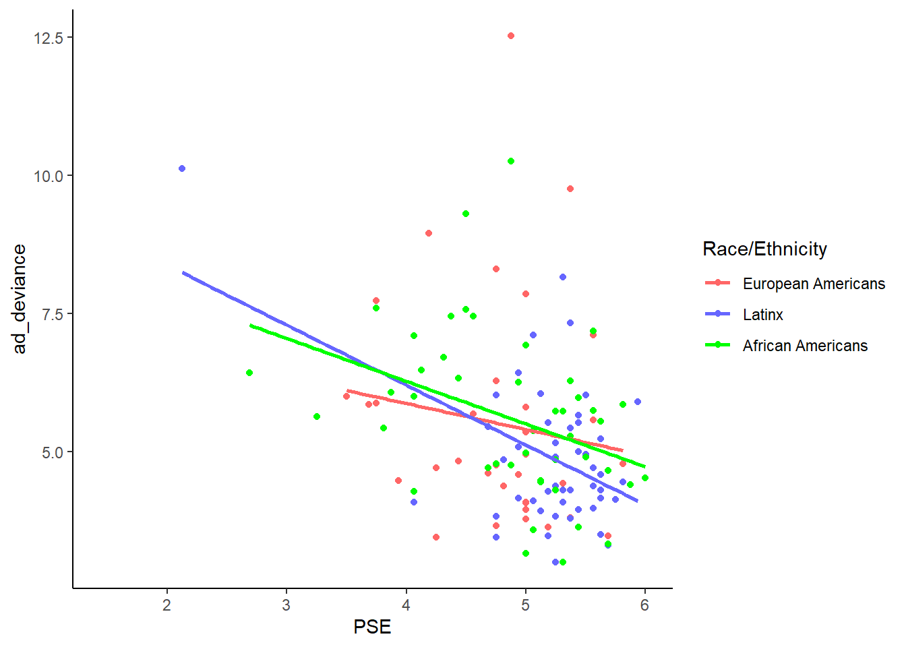

Portfolio 4
test moderation in this piece of portfolio.
library(tidyverse)## ── Attaching packages ─────────────────────────────────────── tidyverse 1.3.2 ──
## ✔ ggplot2 3.4.1 ✔ purrr 1.0.1
## ✔ tibble 3.1.8 ✔ dplyr 1.1.0
## ✔ tidyr 1.3.0 ✔ stringr 1.5.0
## ✔ readr 2.1.4 ✔ forcats 1.0.0
## ── Conflicts ────────────────────────────────────────── tidyverse_conflicts() ──
## ✖ dplyr::filter() masks stats::filter()
## ✖ dplyr::lag() masks stats::lag()library(dplyr)
library(haven)
Mother_and_teen_data <- read_sav("Mother_and_teen_data.sav")
#View(Mother_and_teen_data)
mt <- Mother_and_teen_data %>%
filter(!is.na(Race3)) %>%
mutate(ad_deviance=CD_1 + CD_2 + CD_3)
mt$Race3 <- as.factor(mt$Race3)moderation <- lm(ad_deviance ~ PSE * Race3, mt)
summary(moderation)##
## Call:
## lm(formula = ad_deviance ~ PSE * Race3, data = mt)
##
## Residuals:
## Min 1Q Median 3Q Max
## -2.3398 -0.9696 -0.2310 0.6918 7.0565
##
## Coefficients:
## Estimate Std. Error t value Pr(>|t|)
## (Intercept) 7.7566 2.1481 3.611 0.00044 ***
## PSE -0.4696 0.4435 -1.059 0.29165
## Race32 2.7934 2.9562 0.945 0.34652
## Race33 1.6139 2.6591 0.607 0.54499
## PSE:Race32 -0.6151 0.5891 -1.044 0.29841
## PSE:Race33 -0.3032 0.5458 -0.556 0.57955
## ---
## Signif. codes: 0 '***' 0.001 '**' 0.01 '*' 0.05 '.' 0.1 ' ' 1
##
## Residual standard error: 1.53 on 125 degrees of freedom
## (52 observations deleted due to missingness)
## Multiple R-squared: 0.1408, Adjusted R-squared: 0.1065
## F-statistic: 4.098 on 5 and 125 DF, p-value: 0.001765#RACE AND ETHNICITY DOES NOT MODERATE BETWEEN PSE AND ADOLESCENT DEVIANCE.
#TRY TO PLOT IT.
ggplot(mt, aes(PSE, ad_deviance, color = factor(Race3))) +
geom_point() +
geom_smooth(method = "lm", se = FALSE) +
scale_color_manual(name = "Race/Ethnicity", labels = c("European Americans", "Latinx", "African Americans"), values = c("#FF6666", "#6666FF", "green")) +
theme_classic()## `geom_smooth()` using formula = 'y ~ x'## Warning: Removed 52 rows containing non-finite values (`stat_smooth()`).## Warning: Removed 52 rows containing missing values (`geom_point()`).
# try to test whether race/ethnicity moderates the association between PSE and Disobeying parents (CD_1)
moddp <- lm(CD_1 ~ Race3 * PSE, mt)
summary(moddp)##
## Call:
## lm(formula = CD_1 ~ Race3 * PSE, data = mt)
##
## Residuals:
## Min 1Q Median 3Q Max
## -1.4832 -0.4889 -0.0706 0.4223 2.2039
##
## Coefficients:
## Estimate Std. Error t value Pr(>|t|)
## (Intercept) 3.9224 1.0317 3.802 0.000223 ***
## Race32 -1.0402 1.4198 -0.733 0.465161
## Race33 0.6142 1.2771 0.481 0.631406
## PSE -0.2994 0.2130 -1.406 0.162273
## Race32:PSE 0.1618 0.2829 0.572 0.568389
## Race33:PSE -0.1277 0.2621 -0.487 0.627054
## ---
## Signif. codes: 0 '***' 0.001 '**' 0.01 '*' 0.05 '.' 0.1 ' ' 1
##
## Residual standard error: 0.7348 on 125 degrees of freedom
## (52 observations deleted due to missingness)
## Multiple R-squared: 0.1101, Adjusted R-squared: 0.0745
## F-statistic: 3.093 on 5 and 125 DF, p-value: 0.01147ggplot(mt, aes(PSE, CD_1, color = factor(Race3))) +
geom_point() +
geom_smooth(method = "lm", se = FALSE) +
scale_color_manual(name = "Race/Ethnicity", labels = c("European Americans", "Latinx", "African Americans"), values = c("#FF6666", "#6666FF", "green")) +
labs(x="PSE", y="Disobeying Parents") +
theme_classic()## `geom_smooth()` using formula = 'y ~ x'## Warning: Removed 52 rows containing non-finite values (`stat_smooth()`).## Warning: Removed 52 rows containing missing values (`geom_point()`).
#non-significant as well.# try to test whether race/ethnicity moderates the association between PSE and school misconduct (CD_2)
modsm <- lm(CD_2 ~ Race3 * PSE, mt)
summary(modsm)##
## Call:
## lm(formula = CD_2 ~ Race3 * PSE, data = mt)
##
## Residuals:
## Min 1Q Median 3Q Max
## -0.8499 -0.4243 -0.1060 0.3152 2.2752
##
## Coefficients:
## Estimate Std. Error t value Pr(>|t|)
## (Intercept) 2.68600 0.82911 3.240 0.00153 **
## Race32 1.52259 1.14099 1.334 0.18448
## Race33 0.43258 1.02631 0.421 0.67412
## PSE -0.19717 0.17116 -1.152 0.25153
## Race32:PSE -0.30618 0.22738 -1.347 0.18055
## Race33:PSE -0.05656 0.21067 -0.268 0.78877
## ---
## Signif. codes: 0 '***' 0.001 '**' 0.01 '*' 0.05 '.' 0.1 ' ' 1
##
## Residual standard error: 0.5905 on 125 degrees of freedom
## (52 observations deleted due to missingness)
## Multiple R-squared: 0.1538, Adjusted R-squared: 0.1199
## F-statistic: 4.543 on 5 and 125 DF, p-value: 0.0007695ggplot(mt, aes(PSE, CD_2, color = factor(Race3))) +
geom_point() +
geom_smooth(method = "lm", se = FALSE) +
scale_color_manual(name = "Race/Ethnicity", labels = c("European Americans", "Latinx", "African Americans"), values = c("#FF6666", "#6666FF", "green")) +
labs(x="PSE", y="School Misconduct") +
theme_classic()## `geom_smooth()` using formula = 'y ~ x'## Warning: Removed 52 rows containing non-finite values (`stat_smooth()`).## Warning: Removed 52 rows containing missing values (`geom_point()`).
#non-significant as well.# try to test whether race/ethnicity moderates the association between PSE and substance uses (CD_3)
modsu <- lm(CD_3 ~ PSE * Race3, mt)
summary(modsu)##
## Call:
## lm(formula = CD_3 ~ PSE * Race3, data = mt)
##
## Residuals:
## Min 1Q Median 3Q Max
## -0.6562 -0.2679 -0.1750 0.0590 2.5774
##
## Coefficients:
## Estimate Std. Error t value Pr(>|t|)
## (Intercept) 1.14827 0.66957 1.715 0.0888 .
## PSE 0.02697 0.13822 0.195 0.8456
## Race32 2.31101 0.92143 2.508 0.0134 *
## Race33 0.56714 0.82882 0.684 0.4951
## PSE:Race32 -0.47080 0.18362 -2.564 0.0115 *
## PSE:Race33 -0.11895 0.17013 -0.699 0.4857
## ---
## Signif. codes: 0 '***' 0.001 '**' 0.01 '*' 0.05 '.' 0.1 ' ' 1
##
## Residual standard error: 0.4769 on 125 degrees of freedom
## (52 observations deleted due to missingness)
## Multiple R-squared: 0.1161, Adjusted R-squared: 0.08074
## F-statistic: 3.284 on 5 and 125 DF, p-value: 0.008057ggplot(mt, aes(PSE, CD_3, color = factor(Race3))) +
geom_point() +
geom_smooth(method = "lm", se = FALSE) +
scale_color_manual(name = "Race/Ethnicity", labels = c("European Americans", "Latinx", "African Americans"), values = c("#FF6666", "#6666FF", "green")) +
labs(x="PSE", y="Substance Use") +
theme_classic()## `geom_smooth()` using formula = 'y ~ x'## Warning: Removed 52 rows containing non-finite values (`stat_smooth()`).## Warning: Removed 52 rows containing missing values (`geom_point()`).
#Race/ethnicity significantly moderates the association between PSE and substance use. PSE negatively associates with substance use for European Americans, but not for the Latinx.
#same results as what I got from SPSS.testmod<-'IV=~PSE
MOD=~Race3
DV=~Adolescent_deviance=~CD_1 +CD_2 +CD_3'
library(lavaan)## This is lavaan 0.6-14
## lavaan is FREE software! Please report any bugs.#testfit<-cfa(testmod, data=mt, estimator='MLM')
#unable to conduct in this model because the race/ethnicity factor is a non-numerical factor.#mt$Race12 <- recode(mt$Race3, "c('1')='0'; c('2')='1'")
#mt$Race12 <- as.numeric(levels(mt$Race3))[mt$Race3]
#mt$Race13 <- recode(mt$Race3, "c('1')='1'; c('3')='0'")
#mt$Race13 <- as.numeric(levels(mt$Race13))[mt$Race3]
#mt$Race23 <- recode(mt$Race3, "c('2')='0';c('3')='1'")
#mt$Race23 <- as.numeric(levels(mt$Race23))[mt$Race3]
contrasts(mt$Race3) <- contr.treatment(3)
mt$dummy1 <- ifelse(mt$Race3 == "1", 1, 0)
mt$dummy2 <- ifelse(mt$Race3 == "2", 1, 0)
### SEM Model One: ###
testmod<-'IV=~PSE
MOD=~dummy1+dummy2
Adolescent_deviance=~CD_1 +CD_2 +CD_3
'
CD_1~~CD_2## CD_1 ~ ~CD_2CD_1~~CD_3## CD_1 ~ ~CD_3CD_2~~CD_3## CD_2 ~ ~CD_3testmod <- sem(testmod, mt, estimator="MLM", effect.coding=TRUE, meanstructure=TRUE) ## Warning in lavaan::lavaan(model = testmod, data = mt, estimator = "MLM", : lavaan WARNING:
## Model estimation FAILED! Returning starting values.testfit<-cfa(testmod, data=mt, estimator='MLM')## Warning in lavaan::lavaan(model = testmod, data = mt, estimator = "MLM", : lavaan WARNING:
## Model estimation FAILED! Returning starting values.summary(testmod)## lavaan 0.6.14 did not run (perhaps do.fit = FALSE)?
## ** WARNING ** Estimates below are simply the starting values
##
## Estimator ML
## Optimization method NLMINB
## Number of model parameters 26
## Number of equality constraints 6
##
## Used Total
## Number of observations 131 183
##
##
## Parameter Estimates:
##
## Standard errors Robust.sem
## Information Expected
## Information saturated (h1) model Structured
##
## Latent Variables:
## Estimate Std.Err z-value P(>|z|)
## IV =~
## PSE 1.000 NA
## MOD =~
## dummy1 1.000 NA
## dummy2 -0.476 NA
## Adolescent_deviance =~
## CD_1 1.000 NA
## CD_2 1.156 NA
## CD_3 0.599 NA
##
## Covariances:
## Estimate Std.Err z-value P(>|z|)
## IV ~~
## MOD 0.000 NA
## Adolescnt_dvnc 0.000 NA
## MOD ~~
## Adolescnt_dvnc 0.000 NA
##
## Intercepts:
## Estimate Std.Err z-value P(>|z|)
## .PSE 4.978 NA
## .dummy1 0.282 NA
## .dummy2 0.366 NA
## .CD_1 2.357 NA
## .CD_2 1.734 NA
## .CD_3 1.227 NA
## IV 0.000 NA
## MOD 0.000 NA
## Adolescnt_dvnc 0.000 NA
##
## Variances:
## Estimate Std.Err z-value P(>|z|)
## .PSE 0.000
## .dummy1 0.101 NA
## .dummy2 0.116 NA
## .CD_1 0.289 NA
## .CD_2 0.197 NA
## .CD_3 0.123 NA
## IV 0.417 NA
## MOD 0.050 NA
## Adolescnt_dvnc 0.050 NA#confused. check later.